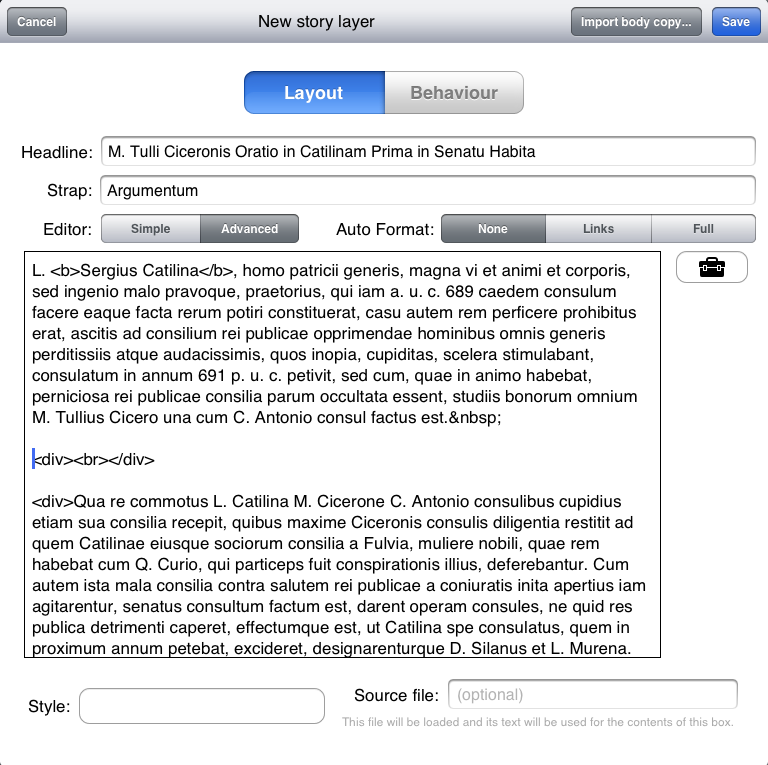

HTML and CSS
Creator represents text using HTML (Hyper Text Markup Language), and styles text using CSS (Cascading Style Sheets). These technologies are the ones used to represent and style text on the web. The workings of HTML and CSS is beyond the scope of this manual, but introductory texts on these subjects are readily available on the web for the interested.
Using HTML for text means that the text can be searched, read back by screen reader technology for the visually impaired, copy and pasted and shared on social networks, and using CSS for the styling means that fonts can be changed or resized on the fly (if the designer so wishes). CSS style sheets can also be reused across multiple stories, or even across issues or publications. One consequence of this is that global changes to style properties can be made by changing a single style sheet, rather than for every story.
The advanced mode story editor
The basic mode story editor

For designers familiar with the intricacies of HTML and CSS, the Creator interface allows for direct, raw access to the markup for the ultimate in terms of control. This advanced interface is illustrated in "The advanced mode story editor". The basic interface, shown in "The basic mode story editor", gives WYSIWYG style editing for the most common styling features, such as bold, italics etc.
| ◀ Stories | Up: Stories | Importing Text ► |